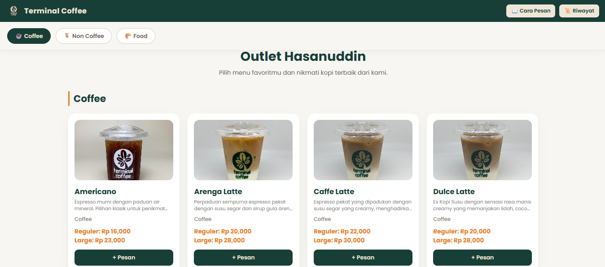

Selected Projects
Real-world web solutions bridging operational logic and user experience.



Apr 2026 – Jul 2026 ·
Thesis Project
Web-Based Raw Material Management System
- Developed a full-stack web application integrating a Point of Sale (POS) system with raw material inventory management.
- Implemented role-based access control (RBAC) to separate workflows and system features for Barista and Logistics roles.
- Developed back-end features to automatically update raw material stock based on POS transactions and support operational reporting.


Aug 2025 – Oct 2025 · PT
Kereta Api Indonesia (Persero)
Locomotive Radio Trouble Report System
- Developed an internal web-based application for managing locomotive radio trouble reports using HTML, CSS, JavaScript, Google Apps Script, and Google Sheets.
- Supported data input, storage, processing, and reporting workflows to streamline operational data management within the Sintel Unit.
- Translated operational needs into practical digital features and worked within an organizational environment to deliver a functional solution.